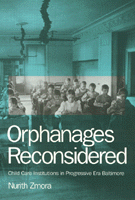

A provocative re-examination of the ways private orphanages cared for children in need
A provocative re-examination of the ways private orphanages cared for children in need


 A provocative re-examination of the ways private orphanages cared for children in need
A provocative re-examination of the ways private orphanages cared for children in need

|  |
Orphanages ReconsideredChild Care Institutions in Progressive Era BaltimoreNurith Zmorapaper EAN: 978-1-56639-465-9 (ISBN: 1-56639-465-1) |
"In this important, revisionist study, Zmora uses rare manuscript institutional sources, published autobiographies, children's letters, and interviews to...persuasively argue that [20th century Baltimore orphanages] generally provided a physical, educational, vocational, and medical environment that was superior to that which the children would have experienced in their own families."
—Choice
Countering the Dickensian stereotypes, Orphanages Reconsidered portrays how three private orphanages in Baltimore responded to the need of poor, single parents for boarding schools for their children. These innovative institutions also served as pivotal community forces, rebuilding families by providing vocational training, keeping siblings together, and encouraging orphans to maintain close ties with relatives.
Fastidious research shows how the institutions—Jewish, non-denominational Protestant, and Catholic—differed in their ethnic and religious priorities, their financial support, their staffing, and their relations with the community. Nurith Zmora embellishes her portraits with institutional records, letters from the children, and published autobiographies.
"Zmora paints a rich picture of Progressive era orphan policies and orphan life. Zmora successfully shows how vague Progressive pollicies worked on a local level among those whom the policies were meant to help...Zmora also builds a solid historiographical foundation on which others might stand."
—Southern Historian
"Orphanages Reconsidered provides an exceptionally fine understanding of how several children's institutions actually functioned, and it treats those institutions with sensitivity and empathy.... The book is richly documented and benefits from a shrewd, judicious, and creative use of primary sources."
—Leroy Ashby, Department of History, Washington State University
Tables
Preface
Acknowledgments
Introduction
1. The Organization of the Orphanages
2. A Social Profile of the Children
3. Physical Conditions
4. The Children's Education
5. Social Life in the Orphanages
6. Life after the Orphanage
7. Discarding the Orphanages
Notes
Index
Nurith Zmora is Assistant Professor of History at the University of Delaware.
© 2015 Temple University. All Rights Reserved. This page: http://www.temple.edu/tempress/titles/930_reg.html.